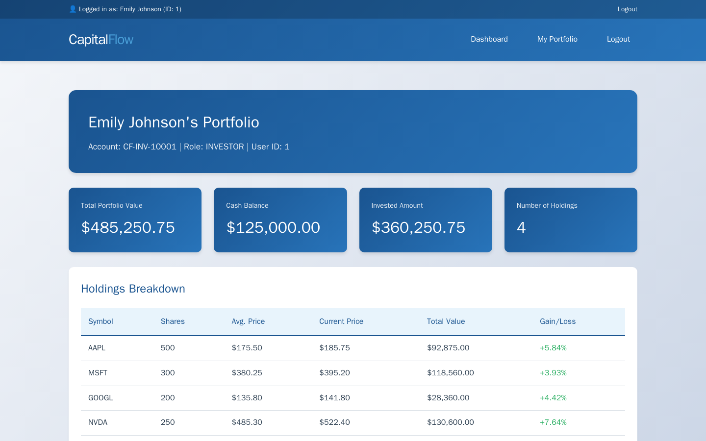
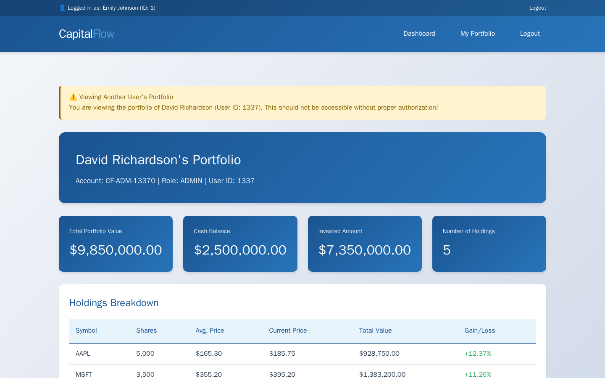

Exercise CF2.4: Insecure Direct Object Reference (IDOR)
Before You Begin
You should have completed Exercises CF2.1 through CF2.3. Those exercises targeted authentication mechanisms and data-layer injection. Exercise CF2.4 focuses on authorization: the application authenticates you correctly but fails to verify whether you are allowed to access the resource you requested. Your VPN must be connected and your terminal open before continuing.
Scenario
CapitalFlow Markets runs a portfolio management service where investors view their holdings, transaction history, and account documents. Each investor sees their own portfolio at a URL containing their user ID. Sarah Chen (CTO) wants you to test whether the system enforces authorization checks: "Can one investor view another investor's portfolio just by changing the number in the URL?"
You will log in as a regular investor, observe the URL pattern, and test whether changing the user ID in the URL grants access to other users' portfolios, including the admin account.
Target: capitalflow-portfolio.lab (port 80)
Credentials:
- Investor account: investor@capitalflow.com / Investor2024# (User ID 1)
- Admin user_id: 1337
Your Objectives
- Add the target hostname to
/etc/hostsand authenticate as the investor - Observe the portfolio URL pattern and identify the user ID parameter
- Access other users' portfolios by changing the user ID
- Enumerate the user list to find the admin account (user_id 1337)
- Access the admin portfolio and locate sensitive documents
- Find and submit the flag in
OCR{...}format
Background: Insecure Direct Object References
What Is IDOR?
An Insecure Direct Object Reference (IDOR) occurs when a web application uses a user-controllable value (such as a database ID in the URL) to directly access a resource, without verifying that the requesting user is authorized to access that specific resource. IDOR falls under OWASP A01:2021 (Broken Access Control) and is one of the most commonly reported vulnerabilities in web application bug bounty programs.
How IDOR Works
Consider a portfolio URL like /portfolio/1. The number 1 is the user ID. When the server receives the request, it should check two things:
- Is the user authenticated? (Do they have a valid session?)
- Is the user authorized? (Is user_id
1their own account?)
A vulnerable application checks authentication (step 1) but skips authorization (step 2). Any authenticated user can change the 1 to 2, 3, or 1337 and view any portfolio.
Why Predictable IDs Enable IDOR
Sequential integer IDs (1, 2, 3, ...) are easy to enumerate. An attacker can loop through all possible IDs to access every user's data. UUIDs (Universally Unique Identifiers) like a3f8b2c1-4d5e-6f7a-8b9c-0d1e2f3a4b5c are harder to guess, but UUIDs alone are not a security fix. If the application still does not check authorization, an attacker who discovers a valid UUID (through error messages, API responses, or URL leakage) can still access other users' resources.
graph TD
A["Investor logs in<br/>(authenticated)"] --> B["Views own portfolio<br/>/portfolio/1"]
B --> C["Changes URL to<br/>/portfolio/2"]
C --> D{"Server checks<br/>authorization?"}
D -->|"Yes"| E["403 Forbidden<br/>Access denied"]
D -->|"No"| F["Returns user 2's<br/>portfolio data"]
F --> G["Attacker enumerates<br/>all user IDs"]
G --> H["Accesses admin<br/>/portfolio/1337"]
style A fill:#4a90d9,color:#fff
style E fill:#6aaa64,color:#fff
style F fill:#d9534f,color:#fff
style H fill:#d9534f,color:#fffTool Primer: curl for IDOR Testing
IDOR testing requires sending authenticated requests while varying a parameter value. The curl flags for cookie-based authentication are the same as previous exercises.
Access your own resource:
Access another user's resource:
Enumerate user IDs with a loop:
for id in $(seq 1 10); do
echo "=== User $id ==="
curl -s -b cookies.txt "http://<target>/portfolio/$id" | head -5
done
The loop tests user IDs 1 through 10 and prints the first 5 lines of each response. Responses that return portfolio data (instead of an error) confirm the IDOR vulnerability for that user ID.
Walkthrough
Step 1: Launch the Exercise
Open the platform in your browser and start the exercise environment.
- Navigate to Exercises and locate the CapitalFlow Markets track
- Find IDOR and click Launch
- Wait for the status to change to Running
- Note the target IP displayed in the Active Lab View
Step 2: Add the Target to /etc/hosts
Kali - Add capitalflow-portfolio.lab to /etc/hosts
Replace <target_ip> with the IP shown in the Active Lab View.
Step 3: Authenticate as the Investor
Log in with the investor credentials and save the session cookie.
Kali - Log in as the investor
The -c flag saves the session cookie. The -L flag follows the post-login redirect.
Step 4: View Your Own Portfolio
Access the portfolio page for the investor account and observe the URL structure.
Kali - Access the investor's portfolio
Read the response carefully. Note the portfolio data (holdings, balances, documents) and the URL pattern. The /portfolio/1 path uses the user ID directly in the URL. The server should verify that the authenticated user (investor@capitalflow.com, user_id 1) is the owner of portfolio 1 before returning data.

Step 5: Test IDOR by Accessing Another User's Portfolio
Change the user ID in the URL to access a different user's portfolio.
Kali - Try accessing user 2's portfolio
Kali - Try accessing user 3's portfolio
Compare the responses to your own portfolio. If you can see other users' holdings, balances, and documents, the application does not check authorization. A properly secured application would return a 403 Forbidden or redirect you to your own portfolio.
Step 6: Enumerate the User List
Check whether the application exposes a user enumeration endpoint.
Kali - Check for a users API endpoint
If the endpoint returns a user list, look for the admin account. Note the user IDs, usernames, and roles. The admin account should have user_id 1337 based on your intelligence.
If no user list endpoint exists, enumerate IDs manually:
Kali - Enumerate user IDs 1 through 10
Look at the response from each ID. Responses that return portfolio data belong to active users. Note any patterns in the user IDs.
Step 7: Access the Admin Portfolio
Use the admin user_id (1337) to access the admin's portfolio.
Kali - Access the admin portfolio
Read through the admin portfolio content. Look for documents, reports, or files that a regular investor would not have access to. Admin accounts often have access to audit reports, security assessments, and internal documents.

Step 8: Locate the Flag in Admin Documents
The admin portfolio may contain a documents section or file listing. Look for a file named SECURITY_AUDIT_FLAG.txt or similar.
Kali - Search for flag-related content in the admin portfolio
If the flag is in a linked document, fetch that document directly:
Kali - Access the admin's Documents section
Kali - Fetch the SECURITY_AUDIT_FLAG.txt file
The response should contain the flag in OCR{...} format.
Record Your Findings
Document the IDOR vulnerability and extracted data below.
URL pattern observed:
Authorization test results:
User ID Response Authorization Enforced? 1 (own) Portfolio data returned N/A (own account) 2 3 1337 User enumeration results:
Admin portfolio content:
Flag:
Analysis Questions
1. The application used sequential integer IDs in the URL. Would switching to UUIDs (e.g., /portfolio/a3f8b2c1-4d5e-6f7a-8b9c-0d1e2f3a4b5c) fix the IDOR vulnerability? Why or why not?
Reveal Answer
Switching to UUIDs makes enumeration harder because the attacker cannot simply increment a number. However, UUIDs alone do not fix the vulnerability. If the server still skips the authorization check, an attacker who obtains a valid UUID (through API responses, error messages, URL sharing, or browser history) can access any portfolio. The proper fix is server-side authorization: verify that the authenticated user owns the requested resource before returning data, regardless of the identifier format.
2. IDOR vulnerabilities are extremely common in web applications. What development practice would catch IDOR flaws before code reaches production?
Reveal Answer
Security-focused code review should check every endpoint that accesses user-specific data. The reviewer verifies that the endpoint extracts the user ID from the authenticated session (not from the URL or request body) and compares it against the resource owner before returning data. Automated integration tests can also catch IDOR by authenticating as User A and requesting User B's resources, then asserting that the response is a 403 Forbidden. Both practices should be part of the development pipeline.
3. The application exposed a /api/users endpoint that listed all users. How does user enumeration amplify the impact of an IDOR vulnerability?
Reveal Answer
User enumeration gives the attacker a complete list of valid user IDs, eliminating the need to guess or brute-force IDs. Combined with IDOR, the attacker can systematically access every user's data in a single automated loop. Without user enumeration, the attacker might still discover some IDs through sequential guessing, but the user list endpoint removes all friction and exposes the entire user base.
Key Takeaways
- IDOR (Insecure Direct Object Reference) allows authenticated users to access resources belonging to other users by manipulating a predictable identifier in the URL or request parameters
- Authorization checks must verify that the requesting user owns the resource, not just that the user is authenticated; authentication and authorization are separate concerns
- Sequential integer IDs make enumeration trivial; UUIDs raise the bar but do not replace proper authorization enforcement
- User enumeration endpoints amplify IDOR impact by giving attackers a complete target list
- Server-side validation is the only reliable defense; the server must derive the resource owner from the session and compare it against the requested resource before returning data